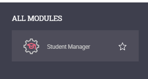
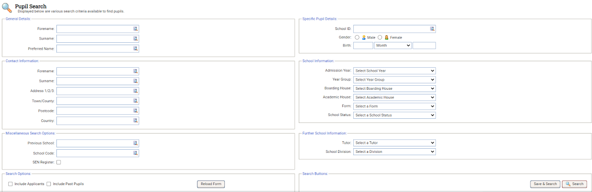

Searching up a student using the basic search
- Open the Student Manager module.
- Select the Current Students tab and click on the Basic search tab
- Use the search fields to enter or select search criteria.
- Select the Search button to display your chosen student records

